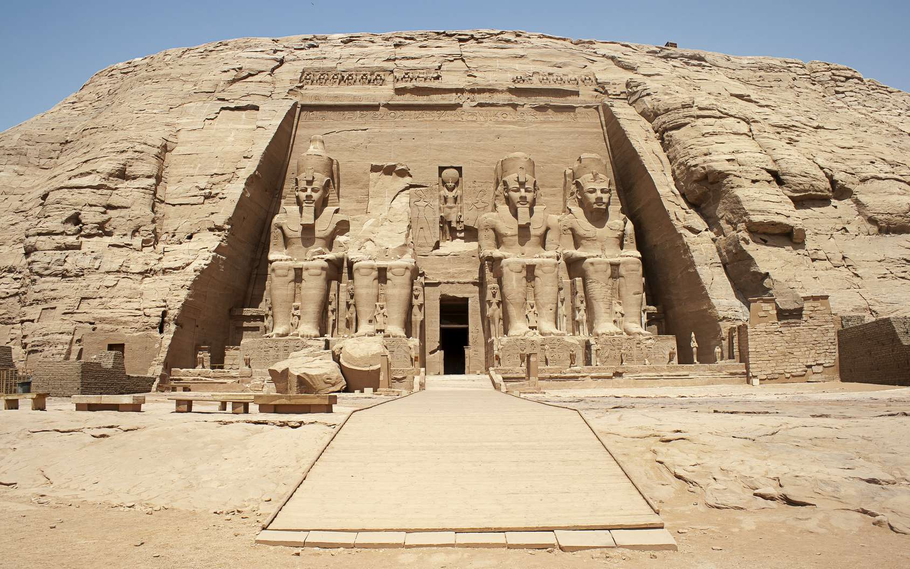

Depuis mon adolescence j'ai nourri une passion pour l'Histoire, ce qui m'a naturellement conduit à m'intéresser aussi à une discipline qui lui est liée : la Géographie. Ces intérêts m'ont ainsi amené vers des études plutôt littéraires et donc a passé un Bac Littéraire en 2017, qui m'a beaucoup interresé et m'a notamment fait découvrir la philosophie. Bien que j'ai choisi de consacré mes études et mon futur travail à la Géographie, j'ai conservé cet intérêt pour l'Histoire puisque je consomme beaucoup de livres, documentaires ou podcasts sur le sujet. J'aimerais aussi beaucoup dans le futur pouvoir visiter l'Egypte et la Chine.
C'est notamment au cours de mes études universitaires que j'ai pu mieux découvrir la Géographie. Ce qui m'a tout de plu dans cette discipline c'est son côté multidimensionnelle puisque qu'elle se trouve au carrefour de différentes autres disciplines : l'Histoire, les sciences physiques et naturelles, l'Economie, le Droit, la Sociologie et même l'Informatique. J'ai trouvé particulièrement intéressant les cours de climatologie, sur les biotopes ainsi que de géopolitique.
Mais la matière que j'ai réellement aimé et que j'ai découvert au cours de ma licence de Géographie a été la géomatique. J'ai en effet pu voir que le fait de combiner la géographie à l'informatique nous donne une infinie de possibilité.
J'ai donc commencé à me renseigner sur les SIG, sur la télédétection, l'analyse spatiale et tous ses autres aspect et j'ai décidé de me spécialiser dans cette voie qui me paraissait innovante.
En complément de la géomatique, j'ai logiquement développé un intérêt pour l'informatique. Je me suis rendu compte qu'avoir des compétences solides en informatique était un plus indéniable car l'informatique permet de vraiment exploiter les capacités qu'offre la géomatique, par exemple avec la création d'applications, l'automatisation des tâches, la webcartographie, l'intelligence artificelle, la gestion des bases de données,...
Enfin, pour ce qui est du sport, j'apprécie la gym, la course à pied ainsi que la randonnée. Au niveau des loisirs, j'aime aussi les jeux-vidéo, notamment les jeux de gestion et de stratégie, ainsi que le cinéma ou la littérature.